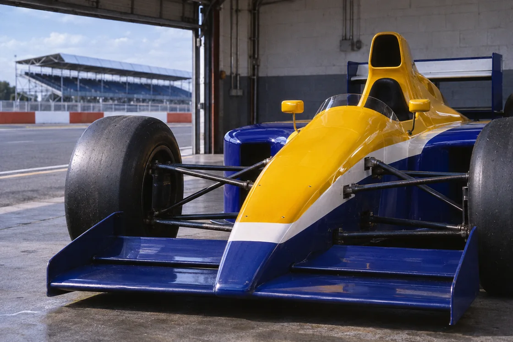
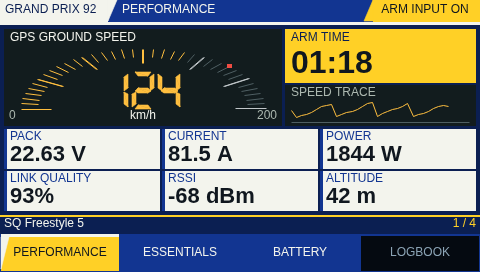

SQUADDING QUADS
FPV
Dashboard
Ten themes for your EdgeTX radio. Follow live telemetry, see your four flight stats on disarm and keep a logbook for each aircraft.

Performance · design preview

Tap the four tabs along the bottom of the display to change pages.
Preview settings Screen, units & simulated aircraft
Demo history stays in this browser. It does not connect to your radio or its SD card.
COLOUR EDGETX 2.11+
Squadding Quads FPV Dashboard
v1.8.9.1 · All ten themes in one installation
ON YOUR RADIO
Set up the dashboard.
The full cockpit is designed for a 480 × 272 colour screen. Smaller zones switch to a compact timing strip.
Four tabs on every theme. Long-press SQDash and choose Full screen. Tap the bottom of the display to jump straight to an instrument page. Logbook is available on the ground.
- Copy the WIDGETS folder.Merge it into the SD card root. Restart EdgeTX and open your existing SQDash widget, or add it to a large screen zone.
- Select Theme 10.Choose Grand Prix ’92 with Theme 10, Boy Wonder with 9 or Tailor with 8. Set Layout, MPH and Feet to taste.
- Set your arm source.Match ArmSrc and ArmHigh to your model’s dedicated arm channel or switch. Check the two positions with the propellers removed.
- Review the flight.Disarm to freeze top speed, highest altitude, lowest LQ and weakest RSSI. Enable LogSD to keep flights on the SD card. In full-screen view, tap or press Enter to open the logbook.
Telemetry and display notes
The browser runs the widget’s Lua renderer with simulated telemetry. On the radio, the dial uses fresh GPS speed samples. The arc spans 0–200 km/h (0–124 mph), and the digits continue above the end of the scale. The red marker shows the highest sampled speed this flight. The speed trace shows up to 36 samples.
The summary freezes the observed flight values. Missing values appear as dashes. With LogSD enabled, SQDash uses the existing per-model CSV journal and recalls the eight most recent flights on the radio.
The Grand Prix ’92 reference is the blue, white and yellow 1992 Williams-Renault FW14B. The garage image is an original concept illustration.